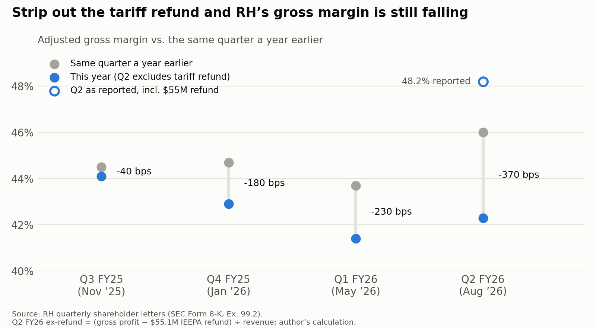
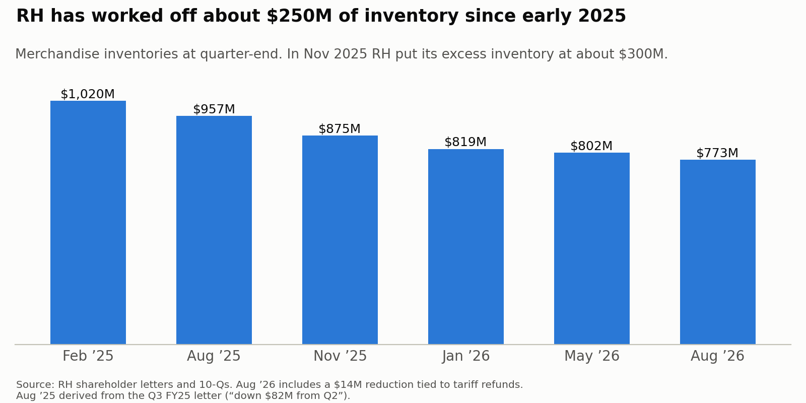
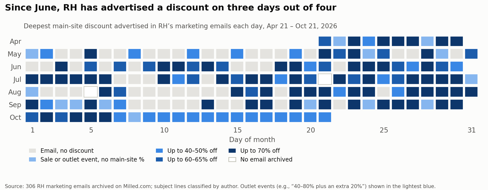

RH Is Always on Sale Now
Restoration Hardware’s gross margin is down about 370 bps once the tariff refund is removed; management says margins are “holding up fine”.1 The market is currently treating RH’s margin slide as the cost of undergoing an ‘investment year’, with three new international Galleries contributing to the drag. While this will fade, product margin has also been falling, and marketing emails show RH advertising a discount on an average of three out of every four days. Guidance asks for Q4 revenue growth of 16-21% and roughly 370 bps of EBITDA margin expansion at the same time - it is unlikely that RH will get both while it’s deep into discounting.
RH’s second-quarter gross margin looked like a recovery
Prior to Q2 FY26, gross margin had been falling for a year:
| Quarter | Adj. gross margin | vs. a year earlier |
|---|---|---|
| Q2 FY25 (Aug ’25) | 46.0% | +80 bps2 |
| Q3 FY25 (Nov ’25) | 44.1% | -40 bps |
| Q4 FY25 (Jan ’26) | 42.9% | -180 bps |
| Q1 FY26 (May ’26) | 41.4% | -230 bps |
Q2 FY26 gross margin was 48.2%, against 46.0% adjusted a year earlier, and on the call management said that “our margins are holding up fine”. But that 48.2% includes a one-time $55.1M IEEPA tariff refund, which RH says was worth about 600 bps.3 RH’s ‘adjusted’ margin does not strip this out. Without the refund, gross margin is about 42.3% against 46.0% adjusted a year ago, roughly 370 bps lower. At the same time, the Q4 guidance assumes 16-21% revenue growth, and the new Estates line will push current gallery stock out through the 44 outlets.
| Quarter | Adj. gross margin | vs. a year earlier |
|---|---|---|
| Q2 FY26 (Aug ’26) | 48.2% | +220 bps |
| Q2 FY26 (Aug ’26), ex-refund | ~42.3% | ~-370 bps |

Q2 FY26 looks much weaker once the refund comes out: gross margin changes to 42.3%, roughly 370 bps below last year. This marks the fourth decline in a row, as well as the steepest. EBITDA tells the same story. Excluding the refund, “normalized” adjusted EBITDA was $123.5M, against $185.1M a year earlier (-33%).4 RH booked another ~$14M of refunds as a reduction to inventory cost, which runs through cost of goods sold in Q3 and Q4. As a result, reported margins will keep looking a little better than the underlying business for the next quarter.
Tariffs, occupancy, or price?
Back in December, RH guided that tariffs would cost about 170 bps of operating margin in Q4.5 Q4 came in at -180 bps, so that decline was more or less all due to tariffs. Q1 (-230) and Q2 (-370) go well past that, so something else must be weighing on margin.
Across the past two quarters, the company has also named occupancy costs (as a result of three galleries opening across Paris, Milan, and London) and product margins as the reasons for the decline.6 Q1 also stated that “decreased product margins in the RH outlet and core businesses” were an additional factor, but by Q2 only “decreased product margins in the RH core business” were noted.7 This hints that core products - not the ones in the outlets - were where margins weakened.
Note that since ‘product margin’ is selling price minus cost, it moves with both inventory markdowns and tariffs (the 10-Q doesn’t distinguish between the two). However, the pricing side can still be isolated using marketing data. Inventory also provides a clue: in November 2025, RH said it had about $300M of excess inventory.8 It has since cut inventory from $1.02B in early 2025 to $773M, with ~$250M worked off.910 This is quite an aggressive reduction, and that much luxury furniture would be difficult to move at regular price.

So, how much of the ~370 bps drop is due to the new furniture tariffs, how much of it is due to occupancy costs, and how much is due to markdowns? We can piece together markdown and sale frequency - as well as discount percentages - through email campaign archives on Milled.
What the inbox says
306 emails from April 21 to October 21, 2026 were pulled from Milled, with the date and subject line tracked. Most discount emails followed a ‘category-plus-discount-ceiling’ structure (e.g. “Up to 70% Off Living, Dining, Bedroom & More”), which was enough to split the sales into core versus peripheral product categories.
Since late April:
RH is basically always on sale. From late April through May, RH advertised a discount on 61% of days (25 of 41). From June to now it’s 75% (107 of 143). Since October 7, it’s every single day, with each one “end[ing] tomorrow”, yet followed by another.
The stacked discounts can get very deep. Over the 4th of July, their “70% + extra 10% + members 30%” works out to about 81% off. Outlet events ran “40–80% + an extra 20%,” which is about 84%.
Sofas are getting deeper discounts. The ceiling on sofas, sectionals and recliners was 40% for most of the period, then 50% in July and a one-off 60% on October 3. The Cloud itself was 40% off twice (Aug 29 and Sep 26).

Note that October’s Fall Sale headline is shallower at 50%, and that the outlet extra fell from 20% to 10%. This is likely because discounts shrunk in October but ran more often.
Why it matters
From 2016-2025, Restoration Hardware followed a strict approach to discounts, replacing traditional seasonal sales with a flat 25% off regular priced goods and an extra 10% off sale items for customers who purchased an annual membership.11 By September 2025, CEO Gary Friedman candidly admitted to Wall Street analysts that the furniture industry was suffering through “the third year of the worst housing market” he had ever seen, and that “furniture is an industry that, at the highest level, does not sell at full price”.12
RH currently blends seasonal public clearance with its membership model. The current terms grant members an additional 30% off all sale items, while the discount for regular priced items sits at 30%. With their Estates collection - launching at prices about 45% higher relative to the rest of RH’s existing assortment - it is clear that the benefits of being a member are increasing.
With more frequent sales and discount-stacking, the effective discount becomes deeper for their most committed customers. But not abandoning seasonal sales altogether - and even applying discounts to core items like the Cloud Sofa - also suggests that the company wants to diversify its customer base; in 2025, 95% to 97% of the company’s total sales came from RH members.13
RH carries a heavy load of fixed costs (Gallery rent, plus about $2.3B of net debt at 4.2x trailing EBITDA) and sales volume counts towards covering them.14 Given that the housing market has frozen and the demand for full-priced goods has thinned, a sale of a discounted item is better than no sale at all.
From this angle, the stacking discounts get more volume out of existing customers, and discounts on popular full-priced items go after people outside of the membership. Either way, RH is trading margin for revenue, which is a defensible choice for a tough investment year. The risk is that it outlasts the year, especially if there is no sign that the housing market will thaw in 2027.
What it means for the stock
Management’s Q3 guidance (5-6% revenue growth, 12.5-13.5% adjusted EBITDA margin) already implies a weak Q3. Rough math backs out to a gross margin of around 41-42% excluding refunds, in line with Q2.15 Q4 is likely going to be more consequential for the stock. Backing it out of the full-year guidance:
| Q4 FY25 (actual) | Q4 FY26 (implied) | |
|---|---|---|
| Revenue | ~$843M | ~$1.0B (+16-21%) |
| Adj. EBITDA margin | 17.7% | ~21% (range ~20-23%) |
RH’s guidance is pointing towards a margin that hasn’t been printed in any of its last five quarters. With pressure coming in three directions: tariffs, Gallery costs, and frequent discounting (all with a frozen housing market looming overhead), it is unlikely that the margins will realize.
Debt also increases the pressure. At ~$135 a share, RH’s market cap is about $2.55B; add ~$2.26B of net debt and the enterprise value is about $4.8B, or roughly 8.4x the midpoint of full-year EBITDA guidance.1617 Held constant, every dollar of missed EBITDA comes out of its equity:
| Scenario (8.4x EV/EBITDA held constant) | FY26 adj. EBITDA | Implied share price |
|---|---|---|
| RH hits guidance midpoint | ~$570M | ~$133 |
| Q4 EBITDA margin flat YoY (~17.7%) | ~$536M | ~$118 |
| Market strips out the ~$69M tariff refund | ~$467M | ~$88 |
My base case is the middle row. In this scenario, RH is able to get the revenue but not the margin. Hitting the guidance midpoint would require both, which is unlikely given the promotional calendar. The bear case - the market stripping out a refund that it has overlooked since September - is also more unlikely. Weighting the three at 30/50/20 gives about $115, roughly 15% downside.
What would prove me wrong
- Q3 gross margin, excluding refunds, comes in either flat or up against last year’s 44.1%. This would mean that discounting isn’t eating into its core business.
- Estates genuinely brings in new money. Surprisingly, Estates demand is coming “almost entirely” from new customers.18 If they buy at full price, Q4 margin could be higher than expected.
- The discount calendar thins out. Fewer discount days or lower ceilings in November and December would be the first sign that RH is pulling back. At the same time, this could just be seasonal: the holidays are an excellent opportunity to let sales pressure rise organically, so discounts might not be needed to incentivize consumers.
- The housing market thaws. A rate cut could lower long-term mortgage rates and restore affordability. Over 90% of market expectations and economist polls anticipate the Fed will hold rates steady at the next FOMC meeting, but a rate cut could come in December.19
What to watch on December 10th
- Gross margin excluding all refunds, including the ~$14M inventory credit. <43% supports the call; flat to 44.1% or above breaks it.
- The Q4 guide. Reaffirmed, raised, or cut? A cut could point to the call playing out early.
- The 10-Q’s gross margin paragraph. Does “decreased product margins in the RH core business” appear for a third quarter?
- Inventory against $773M. Further declines within falling margins means that clearance is ongoing.
This is exploratory research, not investment advice. I do not hold any stock in Restoration Hardware nor am I affiliated with anyone who works there.
- RH Q2 FY26 earnings call, September 10, 2026. Transcript via Benzinga: benzinga.com/news/26/09/61731550. Full quote: “Margins are holding up fine, you know, and I mean, if you just take our model and extract, you know, a lot of these drags”. ↩
- Based on a Q2 FY 2024 adjusted gross margin of 45.2%. ↩
- RH Q2 FY26 results (Form 8-K, Ex. 99.2), September 10, 2026: sec.gov. Ex-refund gross margin = (gross profit − $55.1M refund) ÷ revenue; author’s calculation. ↩
- RH Q2 FY26 results (Form 8-K, Ex. 99.2), September 10, 2026 (cited above). ↩
- RH Q3 FY25 shareholder letter (Form 8-K, Ex. 99.2), December 11, 2025: sec.gov. The 170 bps figure is an operating margin impact “net of mitigations”. ↩
- RH Form 10-Q for the quarters ended May 2, 2026 and August 1, 2026, Note 1. Q2 10-Q: sec.gov. ↩
- RH Form 10-Q, Item 2 (MD&A), quarters ended May 2, 2026 (sec.gov) and August 1, 2026. ↩
- RH Q3 FY25 shareholder letter, December 11, 2025 (cited above). ↩
- RH Q3 FY25 results, December 11, 2025 (cited above). ↩
- RH Q2 FY26 results (Form 8-K, Ex. 99.2), September 10, 2026 (cited above). ↩
- RH, “RH Reimagines and Simplifies the Shopping Experience”: ir.rh.com. ↩
- Bloomberg Government, September 12, 2025: news.bgov.com. ↩
- Business of Home, “RH changed its tune on promotional sales to get through a slow housing market,” July 3, 2025: businessofhome.com. ↩
- RH Q2 FY26 results (Form 8-K, Ex. 99.2), September 10, 2026 (cited above). ↩
- Author’s calculation from RH’s Q2 FY26 guidance: FY26 revenue growth of 5.5-7.0% and adjusted EBITDA margin of 15.0-16.2%; Q3 revenue growth of 5–6% and adjusted EBITDA margin of 12.5-13.5%. Q4 FY25 actuals: revenue ~$843M, adjusted EBITDA margin 17.7%. Q3 gross margin estimate assumes SG&A and D&A stay near Q2 levels as a share of revenue. ↩
- RH Q2 FY26 results (Form 8-K, Ex. 99.2), September 10, 2026 (cited above). ↩
- Share price, market cap and analyst consensus via StockAnalysis, October 26, 2026: stockanalysis.com/stocks/RH. Valuation scenarios hold net debt at its August 1, 2026 level; author’s calculation. ↩
- RH Q2 FY26 earnings call transcript, September 10, 2026 (cited above). ↩
- “Fed to Skip October, Raise Rates Again in December, Nearly All Economists Say,” Reuters, October 20, 2026: reuters.com. ↩